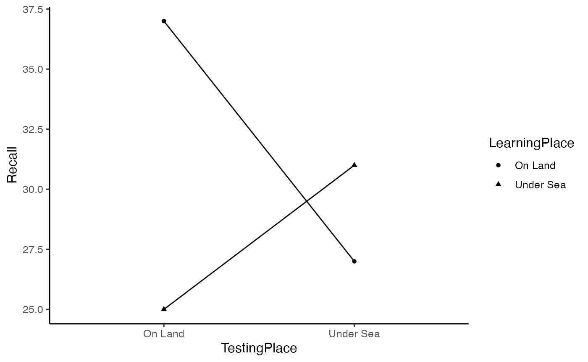

Lab9_RM_ANOVA.RmdChapters 18 and 19 from Abdi et al. (2009). Also see, additional examples and discussion of simple repeated measures in Crump et al. (2018), here https://crumplab.github.io/statistics/repeated-measures-anova.html.
This practical section contains three textbook examples of conducting repeated measures ANOVAs in R. The first two examples are single factor designs, each involving a single repeated measure. The third example is involves a 2x2 design, where both factors are repeated measures.
All examples use the aov() function that we have used for between-subjects designs. The major difference involves specifying the error term appropriately in the formula.
From example 18.13 in Abdi et al. (2009).
library(tibble)
library(tidyr)
library(dplyr)
e1 <- tribble(~Subject, ~Drug_A, ~Placebo, ~Drug_B,
"s1", 124, 108, 104,
"s2", 105, 107, 100,
"s3",107,90,100,
"s4",109,89,93,
"s5",94,105,89,
"s6",121,71,84)
# convert to long
e1 <- pivot_longer(e1,
cols = !Subject,
names_to = "IV",
values_to = "Latency")
# Convert IVs to factors
e1 <- e1 %>%
mutate(Subject = as.factor(Subject),
IV = as.factor(IV))
# conduct ANOVA, note the addition of the error term in the formula
aov_out <- aov(Latency ~ IV + Error(Subject), data=e1)
summary(aov_out)
#>
#> Error: Subject
#> Df Sum Sq Mean Sq F value Pr(>F)
#> Residuals 5 750 150
#>
#> Error: Within
#> Df Sum Sq Mean Sq F value Pr(>F)
#> IV 2 900 450 3.75 0.0609 .
#> Residuals 10 1200 120
#> ---
#> Signif. codes: 0 '***' 0.001 '**' 0.01 '*' 0.05 '.' 0.1 ' ' 1Now that we have seen an example of conducting a repeated measures ANOVA with aov(), let’s closely inspect the formula syntax.
Here is the general syntax for a repeated measures ANOVA with one factor. You would replace DV with column name for the dependent variable in your dataframe; and replace IV with the column name for the independent variable in your dataframe; and, you would replacee Subject with the column name for your subject variable in your dataframe.
Compare it to the syntax for between-subjects ANOVA with one factor, notice the between subjects version does not include the + Error(Subject) component of the formula.
aov(DV ~ IV, data = dataframe)From example 18.14 in Abdi et al. (2009).
e2 <- tribble(~Subject, ~r1, ~r2, ~r3, ~r4, ~r5, ~r6,
"s1",30,18,21,15,18,12,
"s2",21,23,16,17,13,12,
"s3",19,21,13,15,13,9,
"s4",19,19,16,9,11,10,
"s5",21,16,12,15,9,11,
"s6",22,17,14,12,10,9,
"s7",19,20,17,10,13,5,
"s8",17,18,11,11,9,12
)
# convert to long
e2 <- pivot_longer(e2,cols = !Subject,
names_to = "Rank",
values_to = "Recall")
# Convert IVs to factors
e2 <- e2 %>%
mutate(Subject = as.factor(Subject),
Rank = as.factor(Rank))
# conduct ANOVA, note the addition of the error term in the formula
aov_out <- aov(Recall ~ Rank + Error(Subject), data= e2)
summary(aov_out)
#>
#> Error: Subject
#> Df Sum Sq Mean Sq F value Pr(>F)
#> Residuals 7 168 24
#>
#> Error: Within
#> Df Sum Sq Mean Sq F value Pr(>F)
#> Rank 5 720 144 24 2.09e-10 ***
#> Residuals 35 210 6
#> ---
#> Signif. codes: 0 '***' 0.001 '**' 0.01 '*' 0.05 '.' 0.1 ' ' 1When there are multiple within-subject factors, we need to specify the error terms appropriately. Here is the general syntax for a two factor ANOVA with two repeated measures.
From example 19.5 in Abdi et al. (2009).
godden_baddeley <- tribble(~Subjects,~LearningPlace,~TestingPlace,~Recall,
"s1","On Land","On Land",34,
"s2","On Land","On Land",37,
"s3","On Land","On Land",27,
"s4","On Land","On Land",43,
"s5","On Land","On Land",44,
"s1","On Land","Under Sea",18,
"s2","On Land","Under Sea",21,
"s3","On Land","Under Sea",25,
"s4","On Land","Under Sea",37,
"s5","On Land","Under Sea",34,
"s1","Under Sea","On Land",14,
"s2","Under Sea","On Land",21,
"s3","Under Sea","On Land",31,
"s4","Under Sea","On Land",27,
"s5","Under Sea","On Land",32,
"s1","Under Sea","Under Sea",22,
"s2","Under Sea","Under Sea",25,
"s3","Under Sea","Under Sea",33,
"s4","Under Sea","Under Sea",33,
"s5","Under Sea","Under Sea",42
)
# convert IVs to factors
godden_baddeley <- godden_baddeley %>%
mutate(Subjects = as.factor(Subjects),
LearningPlace = as.factor(LearningPlace),
TestingPlace = as.factor(TestingPlace))
# run ANOVA
aov_out <- aov(Recall ~ LearningPlace*TestingPlace + Error(Subjects/(LearningPlace*TestingPlace)), godden_baddeley)
# print out ANOVA summary table
summary(aov_out)
#>
#> Error: Subjects
#> Df Sum Sq Mean Sq F value Pr(>F)
#> Residuals 4 680 170
#>
#> Error: Subjects:LearningPlace
#> Df Sum Sq Mean Sq F value Pr(>F)
#> LearningPlace 1 80 80 2 0.23
#> Residuals 4 160 40
#>
#> Error: Subjects:TestingPlace
#> Df Sum Sq Mean Sq F value Pr(>F)
#> TestingPlace 1 20 20 2.5 0.189
#> Residuals 4 32 8
#>
#> Error: Subjects:LearningPlace:TestingPlace
#> Df Sum Sq Mean Sq F value Pr(>F)
#> LearningPlace:TestingPlace 1 320 320 20 0.0111 *
#> Residuals 4 64 16
#> ---
#> Signif. codes: 0 '***' 0.001 '**' 0.01 '*' 0.05 '.' 0.1 ' ' 1
# generate plot of means
library(ggplot2)
ggplot(godden_baddeley, aes(x=TestingPlace,
y=Recall,
shape=LearningPlace,
group=LearningPlace))+
geom_point(stat="summary",fun="mean")+
geom_line(stat="summary",fun="mean")+
theme_classic(base_size=12)
## example data set to illustrate sphericity
textbook <- tribble(~S, ~a1, ~a2, ~a3, ~a4,
"s1",76,64,34,26,
"s2",60,48,46,30,
"s3",58,34,32,28,
"s4",46,46,32,28,
"s5",30,18,36,28
)
## selecting the table of values in each column
textbook[,2:5]
#> # A tibble: 5 x 4
#> a1 a2 a3 a4
#> <dbl> <dbl> <dbl> <dbl>
#> 1 76 64 34 26
#> 2 60 48 46 30
#> 3 58 34 32 28
#> 4 46 46 32 28
#> 5 30 18 36 28
## computing the covariation matrix
cov(textbook[,2:5])
#> a1 a2 a3 a4
#> a1 294 258 8 -8
#> a2 258 294 8 -8
#> a3 8 8 34 6
#> a4 -8 -8 6 2
## ta
colMeans(cov(textbook[,2:5]))
#> a1 a2 a3 a4
#> 138 138 14 -2
## sa-s
colMeans(cov(textbook[,2:5])) - mean(cov(textbook[,2:5]))
#> a1 a2 a3 a4
#> 66 66 -58 -74
## double-centering
cov_matrix <- cov(textbook[,2:5])
col_mean_matrix <- cov_matrix*0 + colMeans(cov_matrix)
row_mean_matrix <- t(cov_matrix*0 + rowMeans(cov_matrix))
dc_matrix <- cov_matrix - col_mean_matrix -row_mean_matrix + mean(cov_matrix)
## greenhouse-geisser
sum(diag(dc_matrix))^2 / ((dim(dc_matrix)[1]-1)*sum(dc_matrix^2))
#> [1] 0.4459613The aov() function does not automatically apply corrections for sphericity as is sometimes common in statistics programs. However, there are other ANOVA functions that do, such as the ANOVA function from the car package. One wrinkle here is that this function requires data to be in wide format. Here is an example
textbook <- tribble(~S, ~a1, ~a2, ~a3, ~a4,
"s1",76,64,34,26,
"s2",60,48,46,30,
"s3",58,34,32,28,
"s4",46,46,32,28,
"s5",30,18,36,28
)
## ANOVA using car
wide_data <- as.matrix(textbook[1:5,2:5])
aov_model <- lm(wide_data ~1)
rm_factor <- factor(c('a1','a2','a3','a4'))
library(car)
new_anova <- Anova(aov_model,
idata=data.frame(rm_factor),
idesign = ~rm_factor,
type="III")
summary(new_anova,multivariate=FALSE)
#>
#> Univariate Type III Repeated-Measures ANOVA Assuming Sphericity
#>
#> Sum Sq num Df Error SS den Df F value Pr(>F)
#> (Intercept) 32000 1 1152 4 111.1111 0.0004582 ***
#> rm_factor 1800 3 1344 12 5.3571 0.0142330 *
#> ---
#> Signif. codes: 0 '***' 0.001 '**' 0.01 '*' 0.05 '.' 0.1 ' ' 1
#>
#>
#> Mauchly Tests for Sphericity
#>
#> Test statistic p-value
#> rm_factor 0.088557 0.27931
#>
#>
#> Greenhouse-Geisser and Huynh-Feldt Corrections
#> for Departure from Sphericity
#>
#> GG eps Pr(>F[GG])
#> rm_factor 0.44596 0.05999 .
#> ---
#> Signif. codes: 0 '***' 0.001 '**' 0.01 '*' 0.05 '.' 0.1 ' ' 1
#>
#> HF eps Pr(>F[HF])
#> rm_factor 0.5871795 0.04114125Note, the adjusted degrees of freedom are not displayed in the above printout. This repeated measures ANOVA yielded F(3,12) = 5.3571, p = .0142330.
pf(q= 5.3571, df1= 3, df2= 12, lower.tail = FALSE)
#> [1] 0.01423341The estimate of epsilon based on Greenhouse Geisser was .44596. Notice, the p-value is different in the printout above (p = .059999). The Greenhouse-Geisser estimate of epsilon is used to modify the degrees of freedom.
GG_df1 = (4-1) * .44596
GG_df2 = (4-1) * (5-1) *.44596
GG_df1
#> [1] 1.33788
GG_df2
#> [1] 5.35152
pf(q= 5.3571, df1= GG_df1, df2= GG_df2, lower.tail = FALSE)
#> [1] 0.05999576For comparison purposes, here is an ANOVA summary using aov() that does not include corrections.
# compare to ANOVA using aov
# convert to long
long_data <- pivot_longer(textbook,cols = !S,
names_to = "IV",
values_to = "DV")
# Convert IVs to factors
long_data <- long_data %>%
mutate(S = as.factor(S),
IV = as.factor(IV))
# conduct ANOVA, note the addition of the error term in the formula
aov_out <- aov(DV ~ IV + Error(S), data= long_data)
summary(aov_out)
#>
#> Error: S
#> Df Sum Sq Mean Sq F value Pr(>F)
#> Residuals 4 1152 288
#>
#> Error: Within
#> Df Sum Sq Mean Sq F value Pr(>F)
#> IV 3 1800 600 5.357 0.0142 *
#> Residuals 12 1344 112
#> ---
#> Signif. codes: 0 '***' 0.001 '**' 0.01 '*' 0.05 '.' 0.1 ' ' 1Your assignment instructions are the following:
A. The dependent variable is assumed to come from a normal distribution with mean = 0 and standard deviation = 1.
B. There is one repeated measures factor with 5 levels (Down1, Down2, Control, Up1, Up2). The control group is assumed to have no effect. The Down1 and Down2 levels shift the mean down by 1 and 2 standard deviations, respectively. The Up1 and Up2 levels shift the mean up by 1 and 2 standard deviations, respectively.
C. There are 6 subjects in the experiment, and they are each measured once in each condition. The 6 subjects are assumed to be different from one another (e.g., they will have different baseline means in the control condition), but they will all be influenced by the IV in the exact same way (e.g., no interaction).
Run a simulation to determine the proportion of experiments that would return a significant result for the above design. Assume that the effect of the levels of the IV are increments of .1 of a standard deviation, rather than increments of 1 as in the above design.
Demonstrate that the Godden and Baddeley example data from the textbook (19.5), which used a 2x2 repeated measures design, can be be analyzed with one-sample t-tests to return the same results. Specifically, show the one-sample t-tests for each main effect and the interaction. (2 points)
Bonus Points
These bonus questions are about the sphericity concept, and they will involve modifying the example data from the textbook (same as used in concept sectdion 1). The data is reprinted here for your convenience:
sphericity <- tribble(~S, ~a1, ~a2, ~a3, ~a4,
"s1",76,64,34,26,
"s2",60,48,46,30,
"s3",58,34,32,28,
"s4",46,46,32,28,
"s5",30,18,36,28
) Create a line plot showing how each of the 5 subjects perform across the levels of the IV. Discuss how the line plot visually shows the sphericity problem in the data (1 point)
Modify the above data to remove the sphericity problem. Specifically, ensure that all subjects are different from another (there overall means are different), and that the IV has the same effect for each level and each subject (no interaction). Then, plot the new data and discuss how the graph shows the sphericity problem has been removed. (1 point)
Calculate the Greenhouse-Geisser estimate of epsilon for your modified data to demonstrate you have removed the sphericity problem. (1 point)